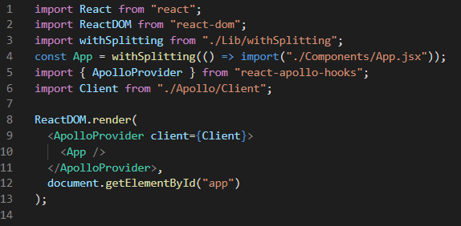

apollo의 기능
1. grpahQL를 통해 받아오는 데이터는 무조건 cache에 저장한다3. apollo는 grpahQL과 통신할수 있다
3. 다시 렌더를 할때 cache에서 받아오기 때문에 매우 빠르게 데이터를 가져올수 있다
apollo의 사용법
1. [import]로 ApolloProvider를 받아온다2. client라는 인자안에 backEnd랑 연결하는 파일을 불러와 넣어준다
3. [App.js]를 한번더 감싸서 사용한다

graphQL의 기능
1. ORM이라는 특성을 가지고 있다2. ORM과 ODM은 데이터베이스를 CRUD하는 걸 도와주는 플렛폼이다
graphQL의 사용법
1. 리졸버에는 javascript파일, query는 graphQL파일로 만들어 준다2. 리졸버에는 query에서 사용될 기능을 넣어준다.
process
frontEnd에서 apollo로 backEnd에 신호를 보내면 grpahQL은 mongoDB에서 데이터를 받아온다음 CRUD를 할수 있게 도와주고 frontEnd로 넘겨준다. graphQL로 데이터를 받아서 cache에 저장하고 렌더한다데이터의 이동 : apollo -> cache -> graphQL -> mongoDB
[ ] : 변경 가능함